บทนี้ครอบคลุมทุกเมนูของบทบาทผู้ดูแลระบบ ตั้งแต่แดชบอร์ด การจัดการผู้ใช้ นักศึกษา รายวิชา และห้องเรียน ไปจนถึงข้อเสนอแนะ บันทึกระบบ มอนิเตอร์ระบบ การตั้งค่าระบบ (สำรองข้อมูล Feature Flags โหมดบำรุงรักษา) และประกาศระบบซึ่งเป็นเมนูที่มีรายละเอียดมากที่สุดในบทนี้ ท่านที่เป็นผู้ดูแลระบบควรอ่านบทที่ 2 เรื่องบัญชีผู้ใช้และความปลอดภัยก่อน โดยเฉพาะหัวข้อการยืนยันตัวตนสองชั้น เนื่องจากการดำเนินงานสำคัญหลายจุดในบทนี้ต้องยืนยันตัวตนซ้ำ (Step-up 2FA)
3.1 แดชบอร์ดผู้ดูแลระบบ#
เป้าหมายของขั้นตอนนี้ เห็นภาพรวมของระบบทั้งหมดทันทีที่เข้าสู่ระบบ โดยไม่ต้องเปิดหลายเมนูแยกกัน
เมื่อผู้ดูแลระบบเข้าสู่ระบบ ระบบจะพาไปยังหน้า แดชบอร์ด โดยอัตโนมัติ
- สถิติรวม
- จำนวนผู้ใช้ นักศึกษา รายวิชา และห้องเรียนทั้งหมด แต่ละการ์ดคลิกเข้าเมนูที่เกี่ยวข้องได้ทันที
- ผู้ใช้งานตามบทบาท
- จำนวนผู้ดูแลระบบ อาจารย์ และผู้ช่วยสอน
- รายละเอียดห้องเรียน
- จำนวนโต๊ะทั้งหมด โต๊ะคอมพิวเตอร์ โต๊ะที่เปิดใช้งาน และปิดใช้งาน
- สถานะเซิร์ฟเวอร์
- CPU หน่วยความจำ และเวลาทำงานของเซิร์ฟเวอร์ ดึงข้อมูลสด เป็นมุมมองสรุปย่อ หากต้องการรายละเอียดเต็มให้ไปที่เมนูมอนิเตอร์ระบบ (ข้อ 3.8)
- บันทึกระบบ 24 ชั่วโมงล่าสุด
- จำนวนรวมและจำนวนแยกตามประเภท (ผิดพลาด/ยืนยันตัว/ความปลอดภัย) พร้อมลิงก์ไปหน้าบันทึกระบบทั้งหมด
- ทางลัด
- ปุ่มลัดไปยังเมนูที่ใช้บ่อย ได้แก่ ผู้ใช้งาน นำเข้าข้อมูลนักศึกษา รายวิชา และบันทึกระบบ
- เมนูด้านซ้าย
- เข้าถึงทุกโมดูล ได้แก่ ผู้ใช้งาน นักศึกษา รายวิชา ห้องเรียน ข้อเสนอแนะ บันทึกระบบ มอนิเตอร์ระบบ และตั้งค่า
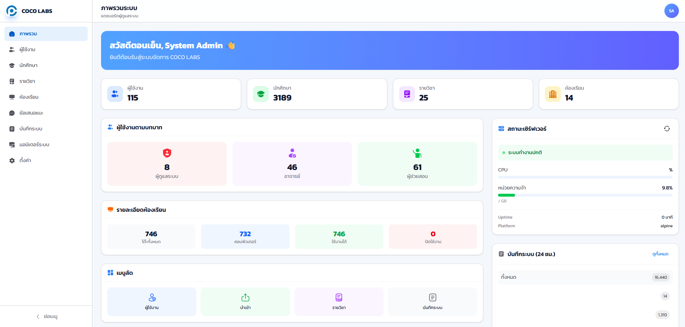
3.2 จัดการผู้ใช้ (แอดมิน อาจารย์ ผู้ช่วยสอน)#
เป้าหมายของขั้นตอนนี้ สร้างและดูแลบัญชีผู้ใช้ระบบทั้งหมดที่ไม่ใช่นักศึกษา
เมนู ผู้ใช้งาน ใช้จัดการบัญชีผู้ใช้ระบบทั้งหมด
- สรุปด้านบน
- จำนวนผู้ใช้ทั้งหมด ผู้ดูแลระบบ อาจารย์ และผู้ช่วยสอน
- ช่องค้นหาและตัวกรอง
- ค้นด้วยชื่อหรืออีเมล กรองตามบทบาทและสถานะ (ใช้งาน/ปิดใช้งาน)
- คอลัมน์ในตาราง
- บทบาท สถานะ การเปิด 2FA (2FA enabled/disabled) และประเภทบัญชี (เข้าสู่ระบบด้วยรหัสผ่านในระบบ หรือเชื่อมต่อผ่าน Google)
- คลิกไอคอนดินสอเพื่อ แก้ไข ข้อมูลบัญชี
- คลิกไอคอนกุญแจเพื่อ รีเซ็ตรหัสผ่าน ให้ผู้ใช้รายนั้น ระบบจะสร้างรหัสผ่านชั่วคราวใหม่ให้ทันที
- คลิกไอคอนรูปตาเพื่อ เปิด/ปิดการใช้งาน บัญชี
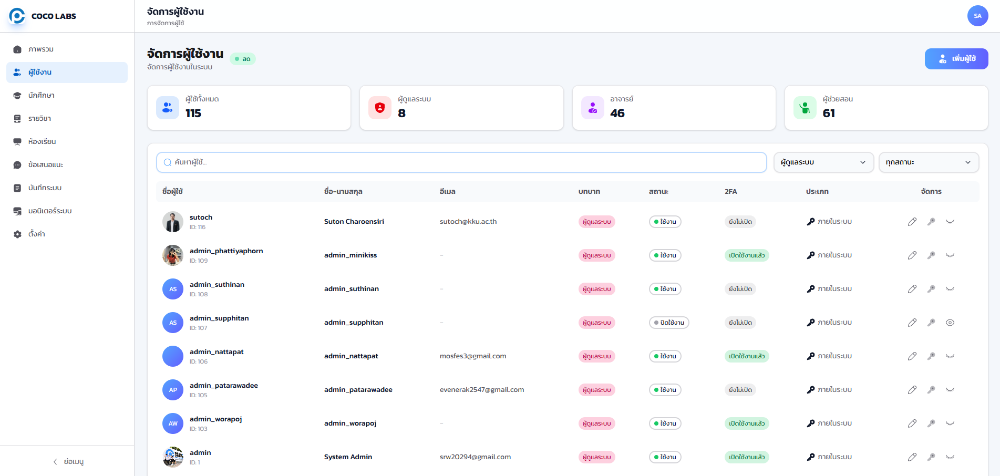
หน้านี้ยังไม่มีปุ่มลบบัญชีถาวร มีเพียงปุ่มปิดการใช้งานซึ่งมีผลทันทีทำให้ผู้ใช้นั้นเข้าสู่ระบบไม่ได้ หากพบว่าเวอร์ชันที่ใช้งานจริงมีปุ่มลบปรากฏขึ้น ให้ตรวจสอบกับทีมพัฒนาว่าเปิดใช้ฟีเจอร์นี้แล้วหรือยัง
เพิ่มผู้ใช้ใหม่
คลิกปุ่ม เพิ่มผู้ใช้ ที่มุมขวาบนของหน้ารายชื่อ ระบบจะเปิดฟอร์มกรอกข้อมูล
- กรอกข้อมูลตามฟิลด์ด้านบนให้ครบ แล้วคลิก เพิ่มผู้ใช้
- คัดลอก รหัสผ่านชั่วคราว ที่ระบบแสดงขึ้นเพียงครั้งเดียว แล้วส่งต่อให้ผู้ใช้เพื่อเข้าสู่ระบบครั้งแรก
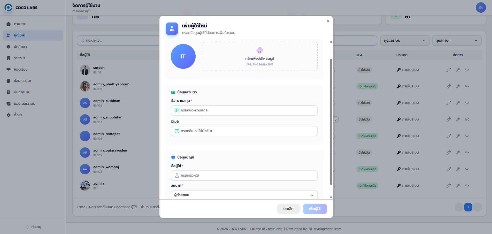
กล่องรหัสผ่านชั่วคราวปรากฏพร้อมปุ่มคัดลอก บัญชีใหม่จะปรากฏในรายชื่อทันที และระบบบังคับให้เปลี่ยนรหัสผ่านทันทีที่ผู้ใช้เข้าสู่ระบบครั้งแรกด้วยรหัสผ่านชั่วคราวนั้น
หากกู้คืนบัญชีที่เคยปิดใช้งานแล้วพบว่าชื่อผู้ใช้หรืออีเมลซ้ำกับบัญชีที่เปิดใช้งานอยู่แล้ว ระบบจะเปิดหน้าต่างให้เลือกว่าจะเก็บบัญชีที่กำลังเปิดใช้งาน หรือคืนบัญชีเดิมแล้วปิดบัญชีที่ซ้ำแทน กรุณาอ่านข้อความในหน้าต่างนั้นให้ครบก่อนเลือก
3.3 จัดการนักศึกษา#
เป้าหมายของขั้นตอนนี้ ดูแลข้อมูลนักศึกษาซึ่งแยกจากบัญชีผู้ใช้ระบบ
เมนู นักศึกษา ใช้จัดการข้อมูลนักศึกษาทั้งหมด นักศึกษาโดยปกติไม่มีรหัสผ่านเข้าระบบแบบเดียวกับผู้ใช้ในข้อ 3.2
- สรุปด้านบน
- จำนวนนักศึกษาทั้งหมด ใช้งาน และปิดใช้งาน
- ปุ่มด้านขวาบน
- จัดการหลักสูตร นำเข้าข้อมูล (Excel/CSV หรือวางข้อความ) และเพิ่มนักศึกษารายคน
- ช่องค้นหา
- ค้นด้วยรหัสนักศึกษา ชื่อ หรืออีเมล พร้อมตัวกรองสถานะ
- คอลัมน์ในตาราง
- หลักสูตร สถานะ และวันที่สร้าง
- คลิกไอคอนดินสอเพื่อ แก้ไข ข้อมูลนักศึกษารายคน
- คลิกไอคอนรูปตาเพื่อ เปิด/ปิดสถานะ การใช้งาน
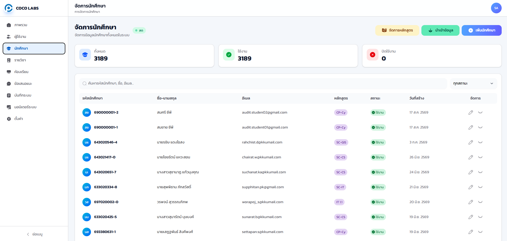
เฉพาะผู้ดูแลระบบเท่านั้นที่สร้าง แก้ไข และนำเข้าข้อมูลนักศึกษาได้ อาจารย์และผู้ช่วยสอนทำได้เพียงค้นหาและดูรายชื่อ กรุณาตรวจสอบรูปแบบไฟล์ให้ถูกต้องก่อนนำเข้าแบบกลุ่มทุกครั้ง ระบบรองรับทั้งไฟล์ที่ส่งออกจากระบบทะเบียนโดยตรงและการวางข้อความ
จัดการหลักสูตร
คลิกปุ่ม จัดการหลักสูตร เพื่อเปิดหน้าต่างเพิ่ม แก้ไข หรือลบหลักสูตรที่ใช้กำหนดให้นักศึกษาแต่ละคน
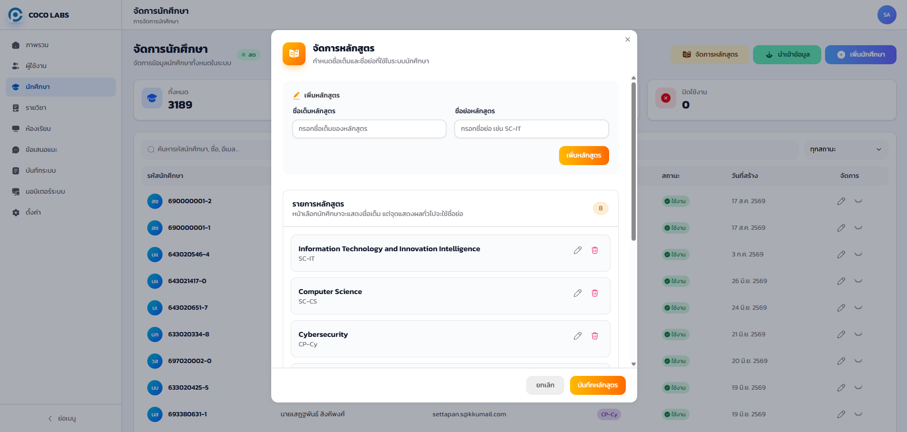
ระบบต้องมีหลักสูตรอย่างน้อย 1 รายการเสมอ และไม่อนุญาตให้ตั้งชื่อย่อซ้ำกัน กรุณาตั้งชื่อย่อให้สั้นและจำได้ง่ายเนื่องจากใช้แสดงในตารางบ่อยที่สุด
3.4 จัดการรายวิชา#
เป้าหมายของขั้นตอนนี้ สร้างและควบคุมรายวิชาทั้งหมดในระบบ
เมนู รายวิชา ใช้จัดการรายวิชาทั้งหมด
- สรุปด้านบน
- จำนวนรายวิชาทั้งหมด ใช้งาน ปิดใช้งาน และของปีการศึกษานี้
- ตัวกรอง
- ปีการศึกษา ภาคเรียน และสถานะ ค้นหาได้ด้วยรหัสวิชาหรือชื่อวิชา
- คลิกปุ่ม เพิ่มรายวิชา เพื่อสร้างรายวิชาใหม่
- ปุ่มจัดการท้ายแถวใช้ เข้าสู่วิชา แก้ไข เปิด/ปิด และลบ
- ทำเครื่องหมายเลือกได้หลายแถวพร้อมกัน เพื่อ เปิดใช้งาน ปิดใช้งาน หรือลบแบบกลุ่ม จากแถบเครื่องมือที่ปรากฏด้านบนตาราง
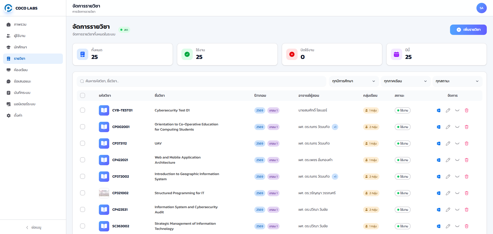
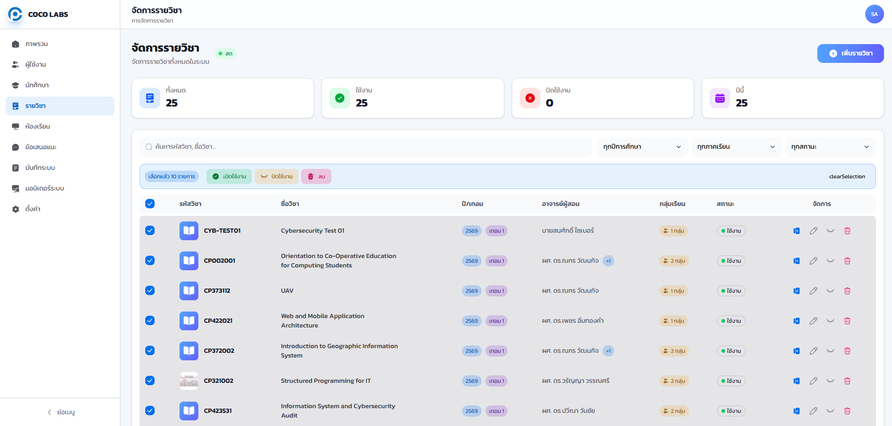
คู่มือฉบับก่อนหน้าระบุว่าหน้านี้ส่งออกข้อมูลรายวิชาเป็น CSV ได้ ปัจจุบันหน้าจัดการรายวิชาไม่มีปุ่มส่งออก CSV ฟีเจอร์ส่งออก CSV มีเฉพาะที่หน้าบันทึกระบบเท่านั้น (ดูข้อ 3.7)
เพิ่มรายวิชาใหม่
หากเปิดใช้งานรายวิชาที่มีรหัสวิชา ปีการศึกษา และภาคเรียนซ้ำกับวิชาที่เปิดใช้งานอยู่แล้ว ระบบจะเตือนก่อนเสมอ และมีศูนย์จัดการความขัดแย้ง (Conflict Center) ให้ตรวจสอบภาพรวมของรายวิชาที่ชนกันทั้งหมดได้ในหน้าเดียว
3.5 จัดการห้องเรียนและผังที่นั่ง#
เป้าหมายของขั้นตอนนี้ จัดการห้องปฏิบัติการสำหรับระบบจองคิว ตั้งแต่สร้างห้อง จัดผังโต๊ะ ไปจนถึงกู้คืนห้องที่ลบไปแล้ว
เมนู ห้องเรียน โครงสร้างเป็น ห้อง → โซน → โต๊ะ โดยโต๊ะแต่ละตัวเก็บพิกัด ประเภท (คอมพิวเตอร์/เรียน/อาจารย์) และข้อมูลเครื่อง
- สรุปด้านบน
- ห้องเรียนทั้งหมด โต๊ะทั้งหมด โต๊ะคอมพิวเตอร์ และจำนวนในถังขยะ
- คอลัมน์จำนวนโต๊ะ
- จำนวนโต๊ะและคอมพิวเตอร์ของแต่ละห้อง
- คลิกปุ่ม สร้างห้องเรียนใหม่ เพื่อเพิ่มห้อง
- ปุ่มจัดการท้ายแถว ได้แก่ ปิด/เปิดใช้งานห้อง แก้ผังที่นั่ง แก้ไขข้อมูล พิมพ์ QR ประจำโต๊ะ และลบห้อง
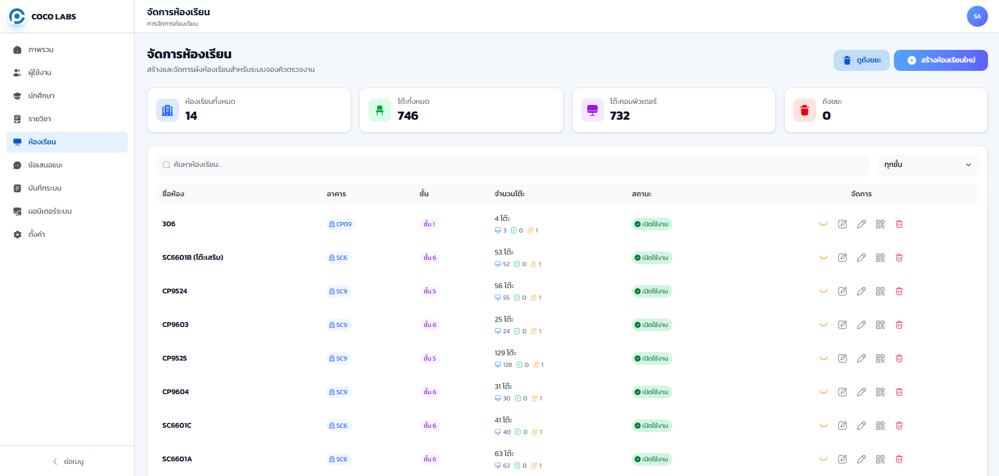
การแก้ผังที่นั่งแบบวิชวล
คลิกไอคอนแก้ผังที่นั่งของห้องที่ต้องการ ระบบจะเปิด หน้าจัดผังห้อง แบบลากวาง
- ส่วน เพิ่มโต๊ะ เลือกจำนวนและประเภทโต๊ะ (โต๊ะคอม/โต๊ะเรียน/โต๊ะอาจารย์) แล้วคลิกเพื่อเพิ่มลงผัง
- ส่วน โซน ใช้แบ่งพื้นที่ห้องเป็นโซนย่อย
- ที่ พื้นที่ผัง ลากโต๊ะเพื่อย้ายตำแหน่ง คลิกโต๊ะเพื่อแก้ไขหรือลบ กด Ctrl ค้างพร้อมคลิกเพื่อเลือกหลายโต๊ะ และเลื่อนล้อเมาส์เพื่อซูม
- เมื่อจัดเสร็จ คลิก บันทึกผัง
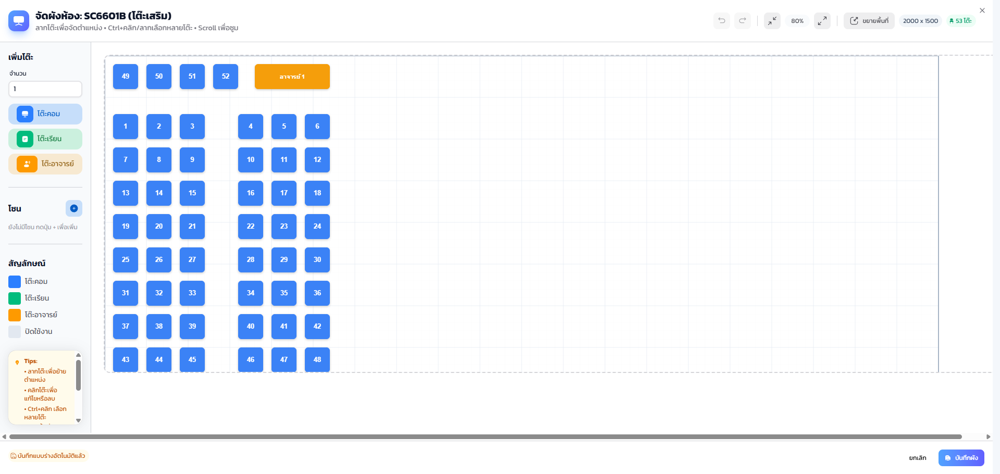
ระบบบันทึกผังฉบับร่างลงในเบราว์เซอร์ระหว่างที่ท่านทำงานอยู่ หากปิดหน้าต่างหรือเบราว์เซอร์ปิดกะทันหันโดยยังไม่ได้กด บันทึกผัง เมื่อเปิดหน้าจัดผังห้องเดิมอีกครั้งระบบจะเสนอให้กู้คืนฉบับร่างล่าสุด
การปิดใช้งานห้อง
เมื่อคลิกปิดใช้งานห้อง ระบบจะขอคำยืนยันก่อนเสมอ
- อ่านข้อความเตือนที่ระบุผลกระทบ ห้องที่ปิดใช้งานจะไม่สามารถใช้ในระบบจองคิวได้ แต่ข้อมูลยังคงอยู่
- กด ปิดใช้งาน เพื่อยืนยัน หรือ ยกเลิก เพื่อยกเลิกรายการ
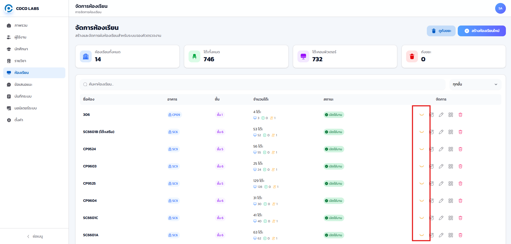
ถังขยะและการกู้คืนห้อง
ห้องเรียนที่ถูกลบไม่ได้หายไปทันที แต่ถูกย้ายไปยังถังขยะก่อน ถังขยะไม่ใช่หน้าแยกต่างหาก แต่เป็นการสลับมุมมองของตารางเดิม
- คลิกปุ่ม ดูถังขยะ ที่มุมขวาบน ตารางจะสลับไปแสดงเฉพาะห้องที่ถูกลบ
- ปุ่มท้ายแถวของห้องในถังขยะเปลี่ยนเป็น กู้คืน และ ลบถาวร
- คลิก แสดงห้องปกติ เพื่อสลับตารางกลับมาแสดงห้องที่ใช้งานอยู่ตามเดิม
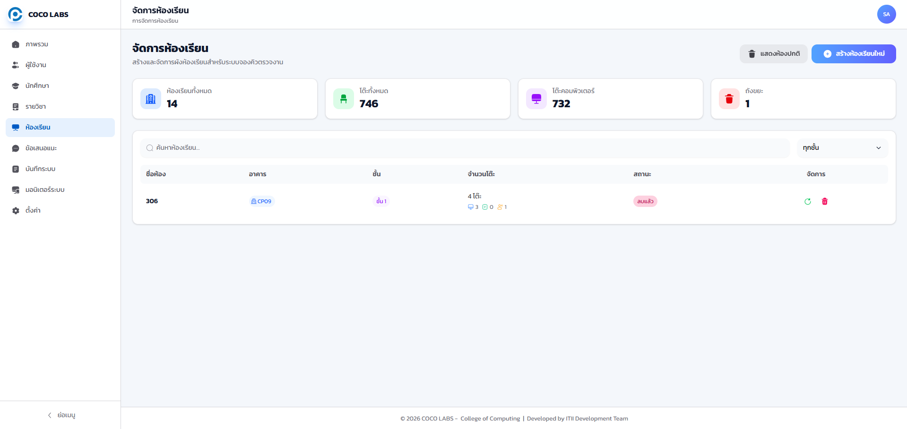
การลบห้องแบบปกติ (ย้ายลงถังขยะ) กู้คืนได้เสมอ แต่การกดลบถาวรจากถังขยะไม่สามารถกู้คืนได้อีก กรุณาตรวจสอบให้แน่ใจก่อนกดลบถาวร
3.6 จัดการข้อเสนอแนะ (Feedback)#
เป้าหมายของขั้นตอนนี้ ติดตามและตอบสนองข้อผิดพลาด ข้อเสนอแนะ และคำขอสนับสนุนจากผู้ใช้และบุคคลทั่วไป
- สรุปด้านบน
- จำนวนตามสถานะ ทั้งหมด รอดำเนินการ กำลังตรวจสอบ แก้ไขแล้ว และจำนวนแยกตามประเภท ข้อผิดพลาด กับคำขอสนับสนุน
- ตัวกรอง
- ประเภท สถานะ (รวมถึงปฏิเสธ) และระดับความสำคัญ พร้อมช่องค้นหา
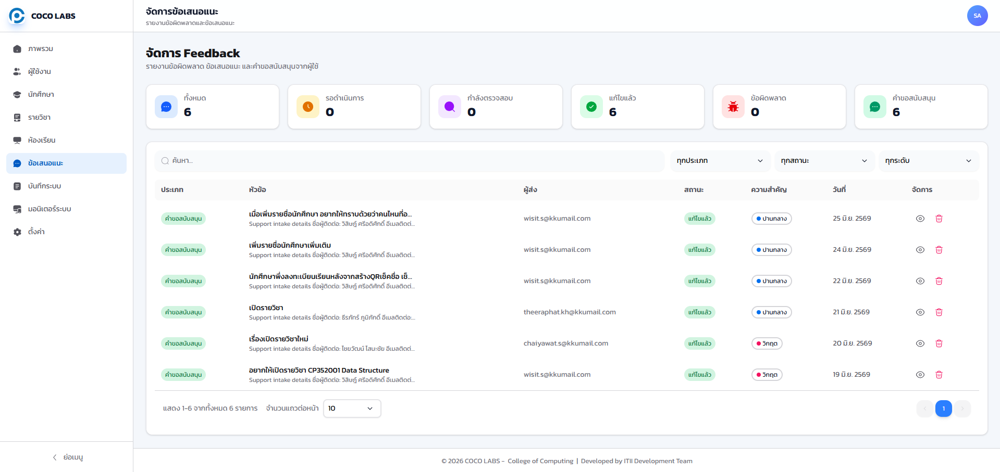
- คลิกไอคอนรูปตาเพื่อ ดูรายละเอียด รายการนั้น
- ในหน้าต่างรายละเอียด ปรับ สถานะ และ ระดับความสำคัญ พร้อมกรอกหมายเหตุภายในได้ตามต้องการ แล้วกด บันทึก
- คลิกไอคอนถังขยะเพื่อ ลบ รายการที่ไม่จำเป็นต้องเก็บไว้ (มีกล่องยืนยันก่อนลบ)
- ข้อมูลผู้แจ้ง
- ชื่อและอีเมลผู้แจ้ง หรือระบุว่าไม่ระบุตัวตนพร้อมอีเมลติดต่อกลับ กรณีส่งมาจากบุคคลทั่วไป
- รายละเอียดและไฟล์แนบ
- คำอธิบายเต็มพร้อมรูปภาพประกอบ คลิกที่รูปเพื่อดูขนาดเต็ม
- ผู้ดำเนินการ
- หากรายการนั้นถูกจัดการแล้ว จะแสดงชื่อผู้ดูแลระบบที่ดำเนินการและเวลา
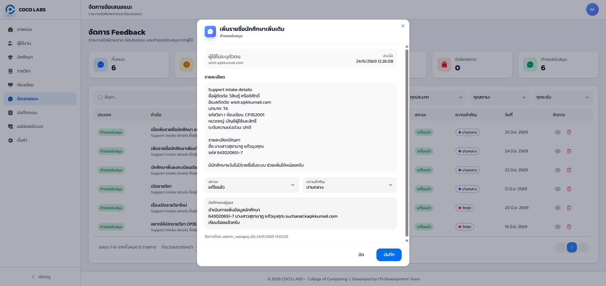
3.7 บันทึกระบบ (System Logs)#
เป้าหมายของขั้นตอนนี้ ตรวจสอบย้อนหลังว่าใครทำอะไรในระบบ เมื่อใด และผลลัพธ์เป็นอย่างไร
- แท็บ System Logs และกิจกรรมรายวิชา
- แยกมุมมองระบบโดยรวมกับมุมมองเฉพาะรายวิชา
- แถบสรุป
- แบ่งตามประเภท การเข้าถึง ผิดพลาด ยืนยันตัว ความปลอดภัย พร้อมตัวนับ Permission changes / Member changes / Feedback actions / Course governance ซึ่งกดเป็นตัวกรองได้ด้วย
- ตัวกรอง
- ค้นหาจาก action/URL/IP ประเภท ระดับความรุนแรง ช่วงเวลา (1 ชม. ถึง 90 วัน หรือกำหนดเอง) และสวิตช์ "เฉพาะการกระทำที่มีสิทธิ์สูง"
- คอลัมน์ในตาราง
- เวลา ประเภท ระดับ action สถานะ IP และผู้ใช้ (มีป้ายกำกับหากผู้กระทำเป็นนักศึกษา)
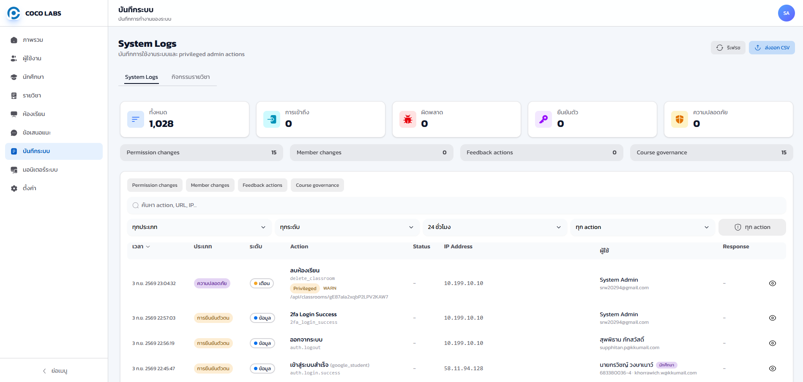
- คลิกปุ่ม ส่งออก CSV เพื่อดาวน์โหลดบันทึกตามตัวกรองที่ตั้งไว้ไปวิเคราะห์ต่อ
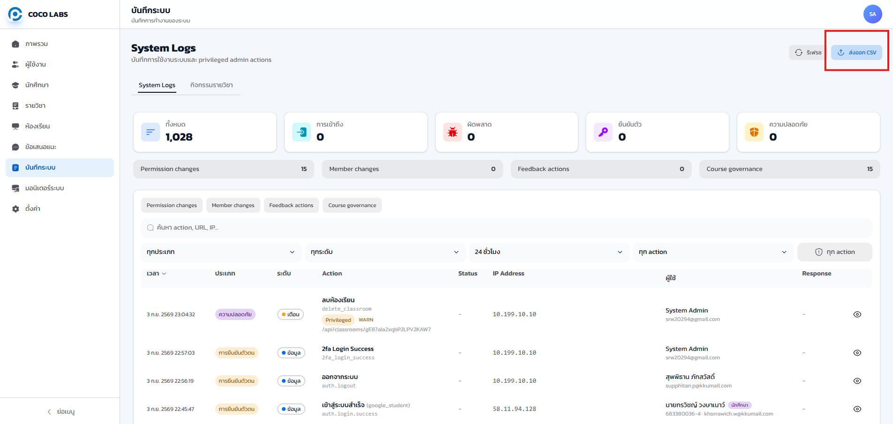
การล้างบันทึก (cleanup logs) เป็นการกระทำที่ต้องยืนยันตัวตนสองชั้นซ้ำ (Step-up 2FA) ก่อนดำเนินการทุกครั้ง ดูหลักการนี้เพิ่มเติมได้ที่ บทที่ 2 ข้อ 2.9
3.8 มอนิเตอร์ระบบ#
เป้าหมายของขั้นตอนนี้ ติดตามสุขภาพเซิร์ฟเวอร์ เว็บไซต์ และ container แบบเรียลไทม์
เมนู มอนิเตอร์ระบบ แบ่งเป็น 4 แท็บ
คู่มือฉบับก่อนหน้าระบุว่ามอนิเตอร์ระบบมีเพียง 3 แท็บ (ภาพรวม สุขภาพเซิร์ฟเวอร์ Containers) และไม่ได้กล่าวถึงแท็บ เว็บไซต์ ที่มีอยู่จริงในระบบ ฉบับนี้แก้ไขให้ครบทั้ง 4 แท็บ
- ภาพรวม
- สรุปสถานะรวมของทั้งเซิร์ฟเวอร์และเว็บไซต์ในหน้าเดียว เหมาะสำหรับตรวจสุขภาพระบบอย่างเร็ว
- สุขภาพเซิร์ฟเวอร์
- เจาะลึกตัวเครื่องเซิร์ฟเวอร์
- เว็บไซต์
- เจาะลึกฝั่งเว็บไซต์ เวลาตอบสนอง (P50/P95/P99) Error Rate และ Request Rate พร้อมกราฟแนวโน้มย้อนหลัง
- Containers
- สถานะ container ที่ระบบรันอยู่ (หากมีการเชื่อมต่อ)
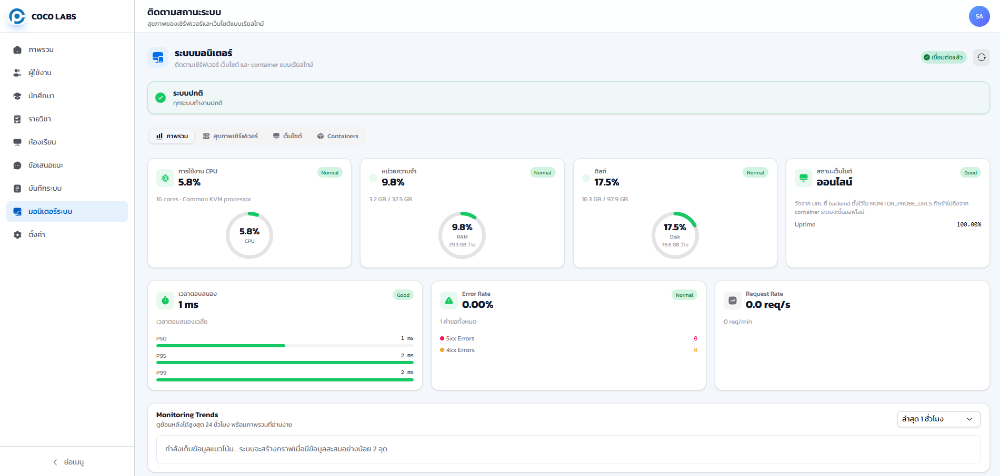
แท็บ สุขภาพเซิร์ฟเวอร์ แสดงการ์ด CPU หน่วยความจำ และดิสก์ พร้อมจำนวนคอร์และขนาดรวม ส่วนล่างแสดง Network I/O, Load Average และเวลาทำงานเซิร์ฟเวอร์ โดยรีเฟรชอัตโนมัติทุก 5 วินาที
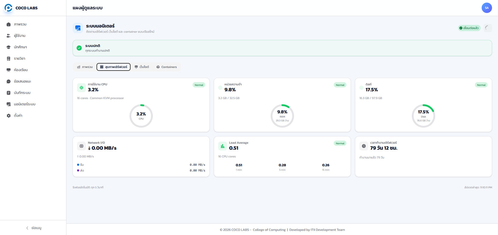
แท็บ Containers แสดงตารางรายการ container พร้อมสถานะและทรัพยากรที่ใช้
ภาพชั่วคราว รอถ่ายจริง
แท็บ เว็บไซต์ เจาะลึกด้านประสบการณ์ผู้ใช้ปลายทาง
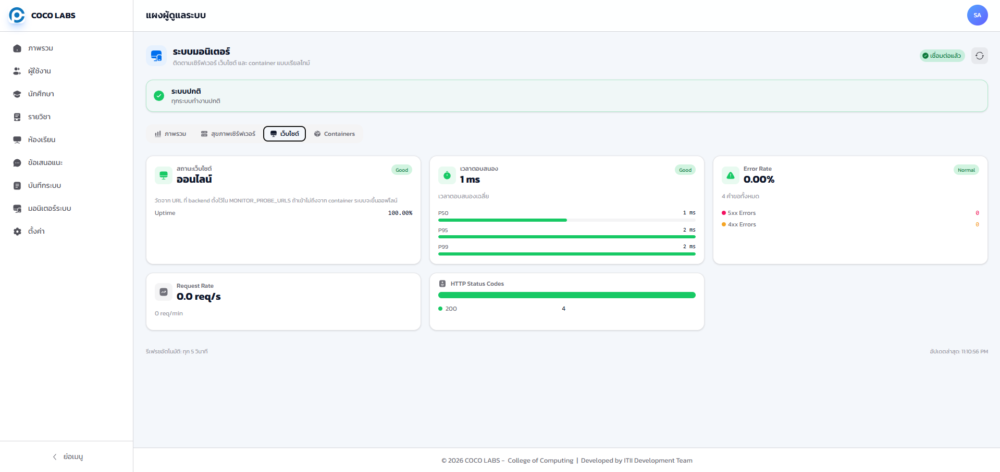
การสั่งดำเนินงานกับเซิร์ฟเวอร์โดยตรง (รีสตาร์ทบริการ รีบูตโฮสต์) ทำจากหน้า ตั้งค่าระบบ ไม่ใช่จากหน้ามอนิเตอร์ระบบ ดูรายละเอียดที่ข้อ 3.9 และต้องยืนยันตัวตนสองชั้นซ้ำทุกครั้งเพราะกระทบผู้ใช้ทั้งระบบ
3.9 ตั้งค่าระบบ: สำรองฐานข้อมูลและควบคุมระบบ#
เป้าหมายของขั้นตอนนี้ สำรองฐานข้อมูลนอกรอบเมื่อจำเป็น และกู้คืนข้อมูลจากจุดสำรองเมื่อเกิดปัญหา
เมนู ตั้งค่า รวมการดำเนินงานระดับระบบทั้งหมด เริ่มจากส่วนสำรองฐานข้อมูล
- ส่วนสำรองฐานข้อมูล
- เวลาสำรองสำเร็จล่าสุดและจำนวนรายการสำรองทั้งหมด
- คลิกปุ่ม สำรองทันที เพื่อสั่งสำรองข้อมูลนอกรอบอัตโนมัติ ระบบจะขอยืนยันตัวตนสองชั้นซ้ำก่อนเริ่มเสมอ
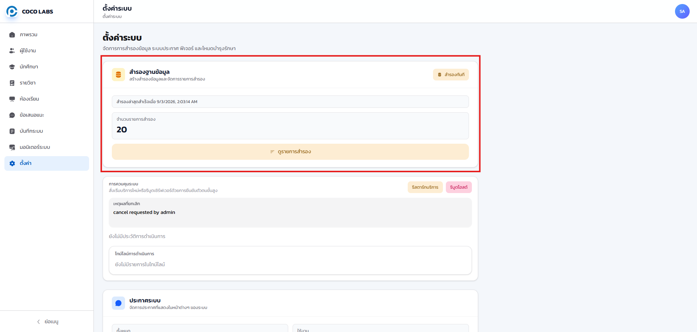
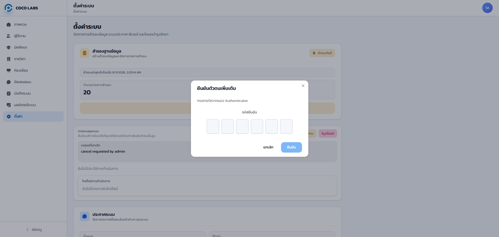
หลังยืนยัน 2FA สำเร็จ สถานะการสำรองจะเปลี่ยนเป็นกำลังดำเนินการแล้วอัปเดตเป็นสำเร็จพร้อมเวลาใหม่ และจำนวนรายการสำรองเพิ่มขึ้น 1 รายการ
การสั่งสำรองทันที การดาวน์โหลดไฟล์สำรอง และการกู้คืนข้อมูล ทั้งสามอย่างต้องยืนยันตัวตนสองชั้นซ้ำทุกครั้ง ไม่ใช่เฉพาะตอนกู้คืนเท่านั้น
รายการสำรองและการกู้คืน
คลิก ดูรายการสำรอง เพื่อตรวจสอบและกู้คืนข้อมูล
- ชื่อไฟล์สำรอง
- ไฟล์ถูกเข้ารหัสไว้เสมอ เปิดอ่านตรง ๆ ไม่ได้หากไม่มีกุญแจถอดรหัสของระบบ
- สล็อต วันที่สร้าง และขนาด
- ใช้ระบุตำแหน่งจัดเก็บและเวลาที่สำรอง
- คลิกปุ่ม กู้คืน ที่แถวจุดสำรองที่ต้องการย้อนกลับไป ยืนยันตัวตนสองชั้นซ้ำ พิมพ์คำว่า RESTORE ตามที่ระบบกำหนด และทำเครื่องหมายรับทราบว่าข้อมูลปัจจุบันจะถูกเขียนทับ ก่อนยืนยันขั้นสุดท้าย
- คลิก ลิงก์ดาวน์โหลด เพื่อดาวน์โหลดไฟล์สำรองเก็บไว้ภายนอก (ต้องยืนยันตัวตนสองชั้นซ้ำเช่นกัน)
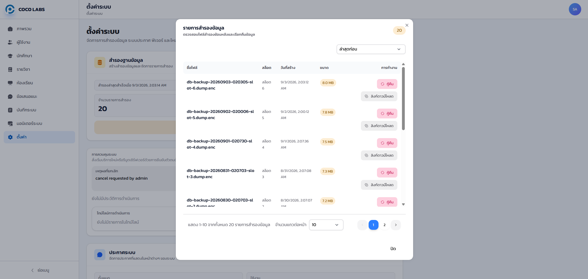
การควบคุมระบบ
ส่วน การควบคุมระบบ อยู่ในหน้าตั้งค่าเดียวกัน แสดงประวัติและไทม์ไลน์การดำเนินการ ปุ่ม รีสตาร์ทบริการ และ รีบูตโฮสต์ ใช้เริ่มระบบใหม่ ทั้งสองปุ่มต้องยืนยันตัวตนสองชั้นซ้ำก่อนเริ่มเสมอ และการรีบูตโฮสต์มีตัวนับถอยหลังที่ ยกเลิกได้ ระหว่างรอ (ต้องยืนยันตัวตนสองชั้นซ้ำอีกครั้งเพื่อกดยกเลิก)
การรีสตาร์ทบริการและรีบูตโฮสต์กระทบผู้ใช้ทั้งระบบทันที กรุณาใช้เฉพาะเมื่อจำเป็นจริง และแจ้งผู้ใช้ล่วงหน้าผ่านประกาศระบบ (ข้อ 3.12) ทุกครั้งที่ทำได้
3.10 ตั้งค่าระบบ: Feature Flags#
เป้าหมายของขั้นตอนนี้ เปิดหรือปิดฟีเจอร์รายส่วนของระบบโดยไม่ต้องปรับโค้ดหรือปล่อยเวอร์ชันใหม่
คลิก จัดการ Feature Flags จากหน้าตั้งค่า เพื่อเปิด/ปิดฟีเจอร์รายส่วนทั้งระบบ
แถบเตือนด้านบนของหน้าต่างนี้ย้ำว่า "การเปลี่ยนสถานะจะมีผลทันทีต่อผู้ใช้" การสลับฟีเจอร์แต่ละรายการต้องยืนยันตัวตนสองชั้นซ้ำทุกครั้งเช่นเดียวกับการสำรองข้อมูล
- ใช้ ช่องค้นหา เพื่อกรองฟีเจอร์จากชื่อหรือคำอธิบาย
- คลิก ปิดทั้งหมด / เปิดทั้งหมด เพื่อสลับทั้งชุดในครั้งเดียว
- สลับสวิตช์รายฟีเจอร์ แล้วยืนยันตัวตนสองชั้นซ้ำเมื่อระบบร้องขอ
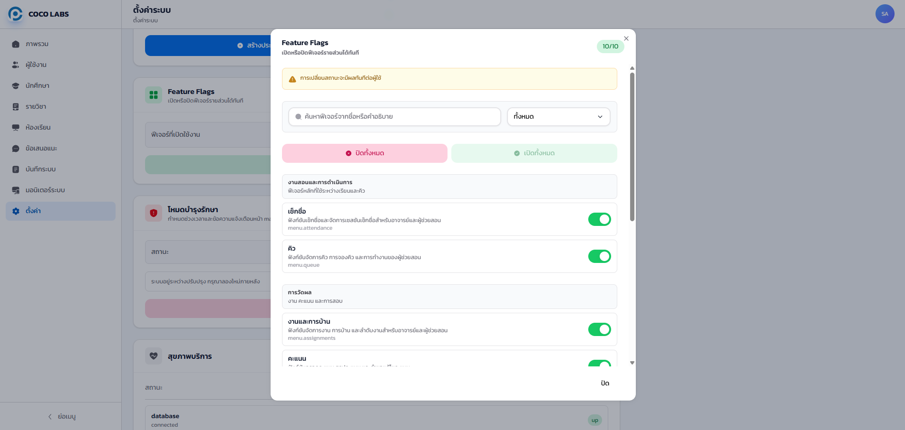
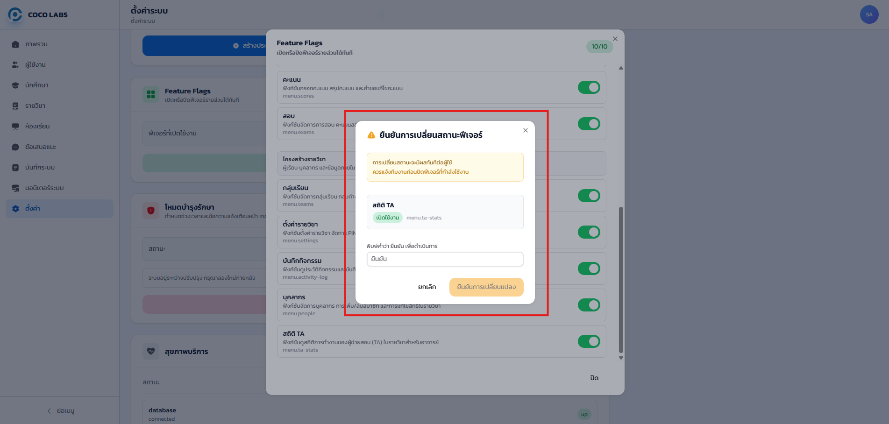
- งานสอนและการดำเนินการ
- เช่น เมนูเช็กชื่อ (รหัสฟีเจอร์ menu.attendance) และเมนูคิวตรวจงาน (menu.queue)
- การวัดผล
- เมนูงานมอบหมาย คะแนน และการสอบ
- โครงสร้างรายวิชา
- เมนูทีม สมาชิก บันทึกกิจกรรม สถิติผู้ช่วยสอน และตั้งค่ารายวิชา
- อื่น ๆ
- ฟีเจอร์ที่ไม่เข้าหมวดข้างต้น
แต่ละรายการระบุรหัสฟีเจอร์กำกับไว้เสมอ เช่น menu.attendance สำหรับฟังก์ชันเช็กชื่อของอาจารย์และผู้ช่วยสอน
3.11 ตั้งค่าระบบ: โหมดบำรุงรักษาและสุขภาพบริการ#
เป้าหมายของขั้นตอนนี้ ปิดปรับปรุงระบบชั่วคราวอย่างมีการควบคุม และตรวจสอบว่าบริการย่อยของระบบยังทำงานปกติ
ส่วน โหมดบำรุงรักษา ใช้กำหนดช่วงเวลาปิดปรับปรุงและข้อความที่จะแสดงแก่ผู้ใช้
- เลือกรูปแบบ ไม่มีกำหนด (เปิด/ปิดด้วยสวิตช์) หรือ ตามกำหนดเวลา (ตั้งเวลาเริ่มต้นและสิ้นสุด)
- กรอก ข้อความ ที่จะแสดงแก่ผู้ใช้ระหว่างปิดปรับปรุง
- เลือก รายชื่อผู้ใช้ที่ยกเว้น หากต้องการให้บัญชีที่ไม่ใช่ผู้ดูแลระบบบางบัญชีเข้าใช้งานได้ระหว่างปิดปรับปรุง
- บันทึกการตั้งค่า ระบบจะขอยืนยันตัวตนสองชั้นซ้ำทุกครั้งไม่ว่าจะเปิดหรือปิดโหมดนี้
คู่มือฉบับก่อนหน้าระบุว่าระหว่างปิดระบบ ผู้ดูแลยังเข้าผ่านหน้า login สำรองได้ ความจริงคือระบบใช้หน้าเข้าสู่ระบบหน้าเดียวกันตลอด และบัญชีบทบาทผู้ดูแลระบบทุกบัญชีข้ามโหมดบำรุงรักษาได้โดยอัตโนมัติอยู่แล้วโดยไม่ต้องเพิ่มชื่อในรายชื่อยกเว้น ช่องรายชื่อยกเว้นในฟอร์มมีไว้สำหรับให้สิทธิ์เฉพาะบัญชีที่ไม่ใช่ผู้ดูแลระบบ (เช่น อาจารย์หรือผู้ช่วยสอนบางคน) ให้เข้าใช้งานได้ระหว่างปิดปรับปรุงเท่านั้น
ส่วน สุขภาพบริการ แสดงสถานะบริการย่อยทั้งหมด ได้แก่ ฐานข้อมูล อีเมล พื้นที่อัปโหลด ระบบเรียลไทม์ และพื้นที่จัดเก็บสำรอง สถานะรวมจะแสดงเป็นปกติ เว้นแต่มีบริการย่อยใดบริการหนึ่งขัดข้อง ซึ่งจะแสดงเป็นสถานะลดระดับ
3.12 ประกาศระบบ#
เป้าหมายของขั้นตอนนี้ สื่อสารข้อมูลสำคัญถึงผู้ใช้ทุกบทบาทผ่านช่องทางที่มองเห็นชัดเจนในตัวเว็บ ตั้งแต่ร่างจนถึงติดตามผลการรับทราบ
ประกาศระบบเป็นส่วนหนึ่งของเมนู ตั้งค่า เช่นเดียวกับสำรองข้อมูลและ Feature Flags แต่มีรายละเอียดมากพอที่จะแยกอธิบายเป็นหัวข้อของตนเอง
สถานะและวงจรชีวิตของประกาศ
ประกาศทุกฉบับมีสถานะใดสถานะหนึ่งใน 4 สถานะ ไล่ตามลำดับการใช้งานจริง
- ร่าง (draft)
- ยังแก้ไขได้อิสระ ไม่แสดงต่อผู้ใช้
- กำหนดเวลา (scheduled)
- ตั้งเวลาเริ่มแสดงไว้ล่วงหน้าแล้ว รอถึงเวลาที่กำหนด
- เผยแพร่ (published)
- กำลังแสดงผลอยู่ในขณะนี้
- เก็บถาวร (archived)
- พ้นช่วงเวลาแสดงผลหรือถูกปิดใช้งานแล้ว ยังดูข้อมูลย้อนหลังและสถิติได้
- คลิก ดูประกาศทั้งหมด จากส่วนประกาศระบบในหน้าตั้งค่า
- ค้นหาและกรองประกาศตามสถานะ
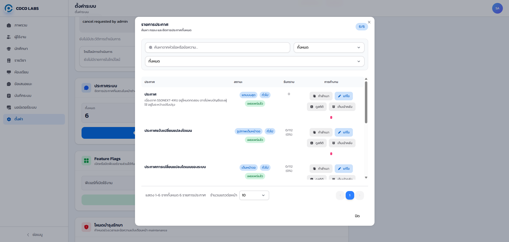
สร้างประกาศ: เนื้อหาและภาษา
คลิกปุ่ม สร้างประกาศ ระบบจะเปิดหน้าต่างสร้างประกาศ แบ่งเป็น 3 แท็บย่อย ได้แก่ เนื้อหา การแสดงผล และผู้รับกับเวลา เริ่มจากแท็บ เนื้อหา
- กรอกเนื้อหาทั้งสองภาษาให้ครบ
- สลับปุ่ม TH / EN ที่กรอบตัวอย่างด้านขวา เพื่อตรวจดูตัวอย่างการแสดงผลของแต่ละภาษาก่อนบันทึก
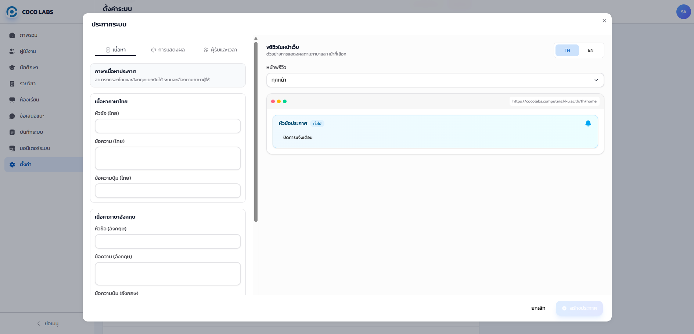
ระดับความสำคัญ (Severity)
เลือกระดับความสำคัญของประกาศ ซึ่งกำหนดสีของป้ายและกรอบที่ผู้ใช้เห็น
- ทั่วไป (info)
- สีหลักของระบบ ใช้กับข่าวสารทั่วไป
- สำเร็จ (success)
- สีเขียว ใช้แจ้งผลลัพธ์เชิงบวก เช่น ปรับปรุงเสร็จแล้ว
- คำเตือน (warning)
- สีเหลือง/ส้ม ใช้แจ้งเตือนล่วงหน้า เช่น จะปิดปรับปรุงเร็ว ๆ นี้
- ด่วน (urgent)
- สีแดง ใช้กับเหตุการณ์ที่ต้องให้ผู้ใช้สนใจทันที
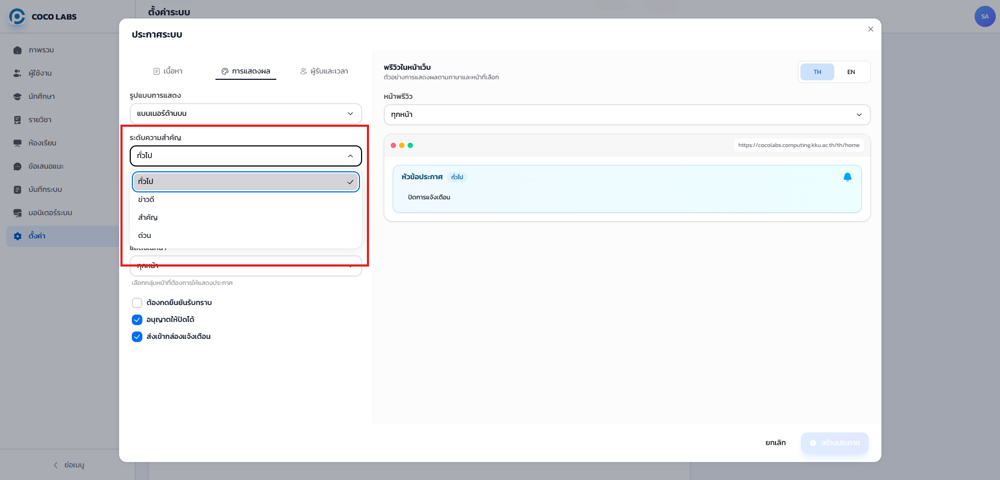
รูปแบบการแสดงผล 5 แบบ
แท็บ การแสดงผล ให้เลือกว่าประกาศนี้จะปรากฏบนหน้าเว็บของผู้ใช้อย่างไร เลือกได้ 1 รูปแบบจาก 5 แบบ
- แบนเนอร์ด้านบน (banner_top)
- แถบข้อความบางแสดงเหนือเนื้อหาหน้าเว็บ ไม่บังเนื้อหาหลัก
- เต็มหน้าจอ (fullscreen)
- บังเนื้อหาทั้งหมดจนกว่าผู้ใช้จะปิดหรือกดรับทราบ เหมาะกับข้อมูลสำคัญมาก
- แถบด้านบนสุด (topbar)
- แถบเล็กที่ขอบบนสุดของหน้าจอ เห็นได้ตลอดโดยไม่รบกวนการใช้งาน
- เต็มหน้าจอแบบมีรูปภาพ (fullscreen_image)
- เหมือนเต็มหน้าจอแต่เน้นภาพประกอบเป็นหลัก เหมาะกับประกาศเชิงประชาสัมพันธ์
- การ์ดมุมจอ (corner_card)
- การ์ดขนาดเล็กที่มุมจอ ไม่บังคับความสนใจของผู้ใช้มากเท่ารูปแบบอื่น
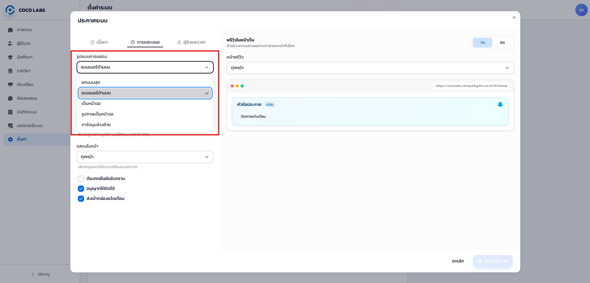
แนบและครอบรูปภาพ
เป้าหมายของขั้นตอนนี้ แนบภาพประกอบให้พอดีกับพื้นที่แสดงผลของรูปแบบที่เลือกไว้
- อัปโหลดรูปภาพประกอบในแท็บการแสดงผล
- เลือก อัตราส่วนภาพ จาก 7 แบบ ได้แก่ อิสระ, 16:9, 4:3, 1:1, 3:4, 2:3 และ 9:16
- ลากเพื่อจัดตำแหน่งและเลื่อนแถบเพื่อซูมภาพในกรอบครอบ แล้วยืนยันการครอบภาพ
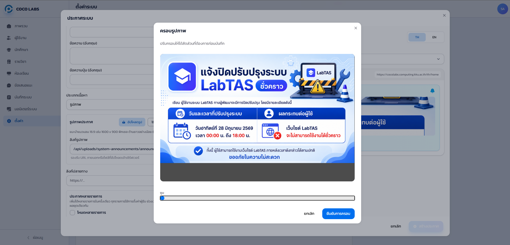
อัตราส่วนเริ่มต้นจะเปลี่ยนตามรูปแบบการแสดงผลที่เลือกไว้ในแท็บก่อนหน้า เช่น รูปแบบเต็มหน้าจอแบบมีรูปภาพเริ่มต้นที่อิสระ ส่วนการ์ดมุมจอเริ่มต้นที่ 4:3 ท่านปรับเปลี่ยนเองได้เสมอ
กำหนดเวลาแสดงและกลุ่มเป้าหมาย
แท็บ ผู้รับและเวลา กำหนดว่าใครจะเห็นประกาศนี้ และเห็นในช่วงเวลาใด
- ตั้ง เวลาเริ่มแสดง และ เวลาสิ้นสุด (เว้นว่างเวลาสิ้นสุดได้หากยังไม่ต้องการกำหนด)
- เลือก กลุ่มเป้าหมาย ได้หลายรายการ จากตัวเลือกทั้งหมด ทุกคน ผู้ดูแลระบบ อาจารย์ ผู้ช่วยสอน และนักศึกษา
- เลือก หน้าที่จะแสดง เพื่อจำกัดว่าประกาศนี้ปรากฏเฉพาะบางส่วนของเว็บ เช่น เฉพาะหน้านักศึกษา เฉพาะการแจ้งเตือนของนักศึกษา เฉพาะหน้าผู้ดูแลระบบ เฉพาะหน้าอาจารย์ เฉพาะหน้าห้องเรียน หรือทุกหน้า
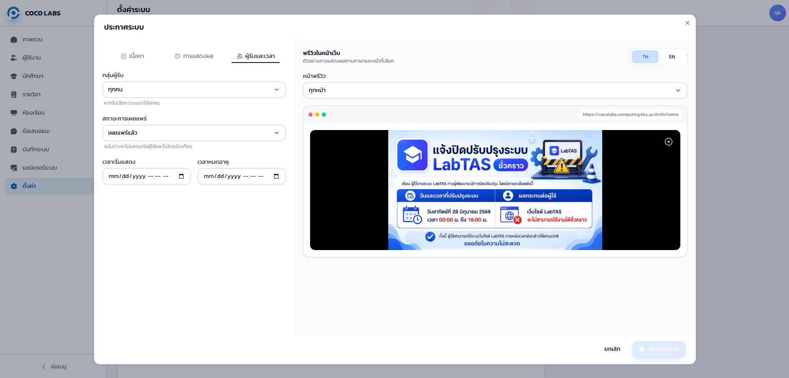
กลุ่มเป้าหมายเลือกได้เฉพาะตามบทบาทเท่านั้น ระบบยังไม่รองรับการเลือกส่งประกาศเฉพาะรายวิชาใดวิชาหนึ่ง
สร้างประกาศหลายรายการพร้อมกัน (Batch)
เป้าหมายของขั้นตอนนี้ สร้างประกาศชุดเดียวกันหลายฉบับในคำขอเดียว โดยไม่ต้องเปิดฟอร์มใหม่ทีละฉบับ
- เปิดโหมดสร้างหลายรายการจากหน้าต่างสร้างประกาศ
- ตั้งค่าเริ่มต้นร่วมกัน (กลุ่มเป้าหมาย กำหนดเวลา รูปแบบการแสดงผล ระดับความสำคัญ)
- เพิ่มรายการย่อยได้สูงสุด 20 รายการ ต่อคำขอ แล้วแก้เฉพาะข้อความของแต่ละรายการให้ต่างกันตามต้องการ
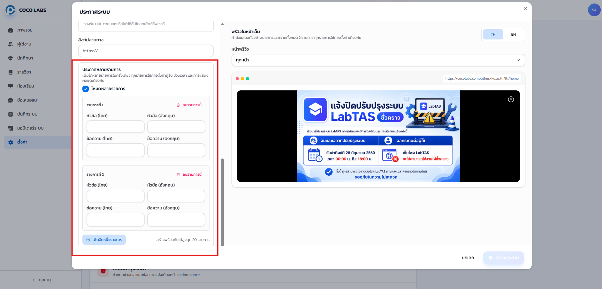
โหมดนี้เหมาะเมื่อต้องการส่งประกาศชุดเดียวกันแต่ปรับถ้อยคำเล็กน้อยให้หลายกลุ่มเป้าหมาย เช่น แยกข้อความสำหรับอาจารย์กับผู้ช่วยสอน โดยไม่ต้องตั้งค่าการแสดงผลและกำหนดเวลาซ้ำทีละฉบับ
บังคับให้กดรับทราบ
- ทำเครื่องหมายที่ บังคับให้กดรับทราบ ในกลุ่มตัวเลือกเดียวกับอนุญาตให้ปิดได้ และแจ้งเตือนในกล่องข้อความ
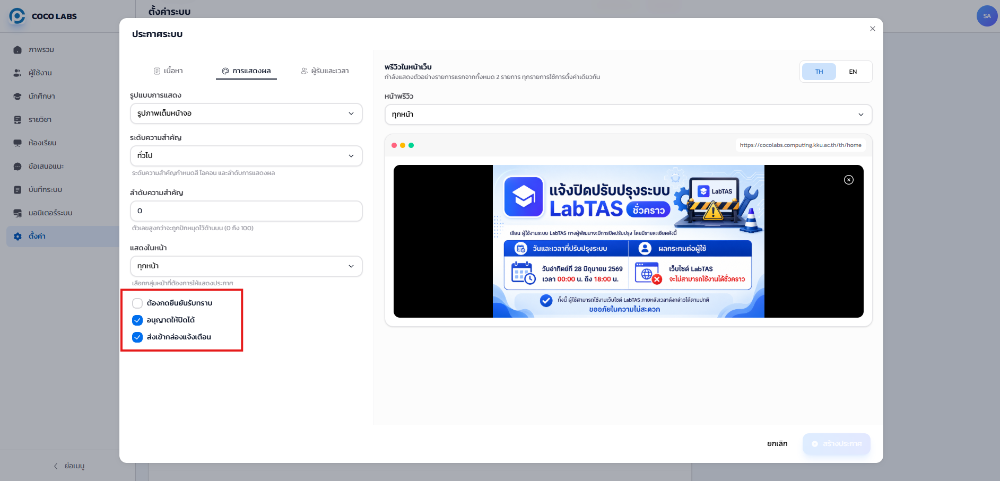
เมื่อเปิดตัวเลือกนี้ ตัวอย่างการแสดงผลด้านขวาจะเปลี่ยนปุ่มปิดเป็นปุ่ม รับทราบ แทน ผู้ใช้ปลายทางต้องกดปุ่มนี้ก่อนประกาศจึงจะปิดได้
ดูสถิติการรับทราบ
คลิกไอคอนสถิติที่แถวของประกาศในรายการ เพื่อเปิดหน้าต่างสถิติ
- จำนวนกลุ่มเป้าหมาย
- จำนวนผู้ใช้ทั้งหมดที่เข้าเงื่อนไขกลุ่มเป้าหมายของประกาศนี้
- รับทราบแล้ว
- จำนวนและร้อยละของผู้ที่กดรับทราบแล้ว
- รอรับทราบ
- จำนวนที่ยังไม่กดรับทราบ พร้อมรายชื่อและบทบาทของแต่ละคน
- ปิดไปแล้ว
- จำนวนที่ปิดประกาศไปแล้ว (เฉพาะประกาศที่อนุญาตให้ปิดได้โดยไม่บังคับรับทราบ)
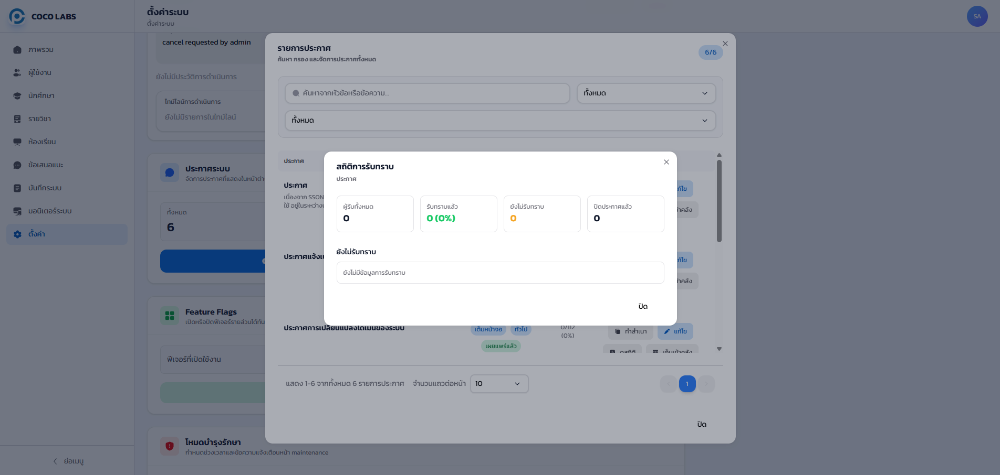
แก้ไข ทำสำเนา และลบประกาศ
- คลิกไอคอนดินสอเพื่อ แก้ไข ประกาศเดิม
- คลิกไอคอนคัดลอกเพื่อ ทำสำเนา ระบบจะเติมคำว่า "(copy)" ต่อท้ายหัวข้อทั้งสองภาษาให้อัตโนมัติ และเปิดเป็นประกาศใหม่แยกจากต้นฉบับ (ต้นฉบับไม่ถูกแก้ไข)
- คลิกไอคอนถังขยะเพื่อ ลบ ประกาศ ระบบจะขอยืนยันก่อนลบเสมอ
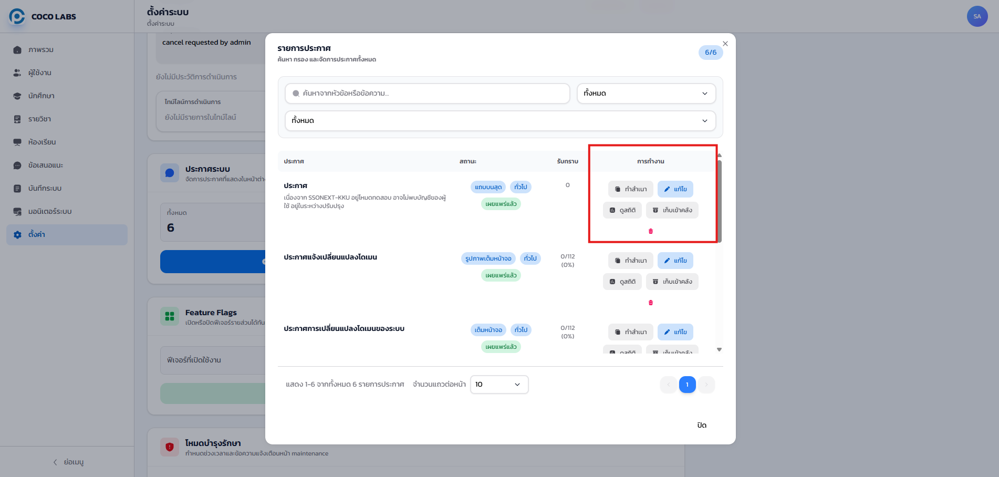
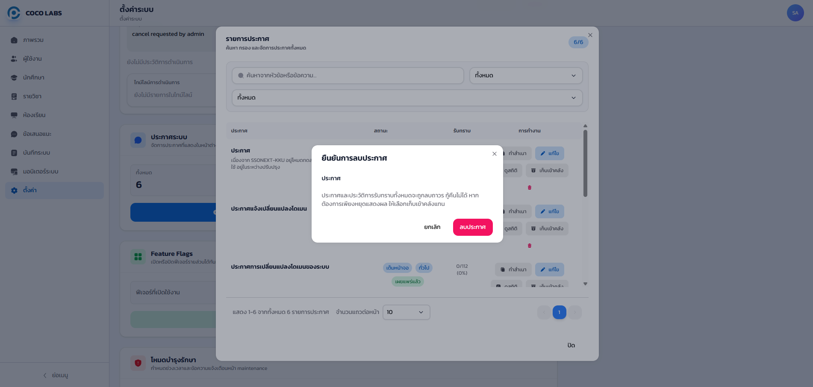
ตัวอย่างการแสดงผลจริง
ภาพต่อไปนี้เป็นตัวอย่างการแสดงผลจริงของประกาศแต่ละรูปแบบ ที่ผู้ใช้ปลายทางจะเห็นบนหน้าเว็บ
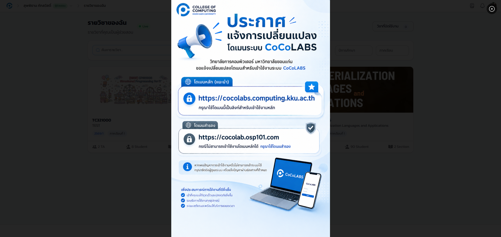
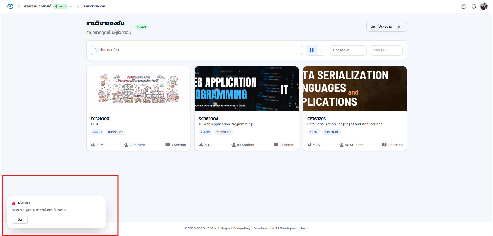
3.13 การเข้าถึงรายวิชาในมุมมองผู้ดูแลระบบ#
เป้าหมายของขั้นตอนนี้ เข้าไปช่วยเหลือหรือตรวจสอบภายในรายวิชาใดก็ได้ในระบบ โดยไม่ต้องเป็นอาจารย์เจ้าของวิชา
ผู้ดูแลระบบเข้าไปในห้องเรียนของทุกรายวิชาได้เหมือนอาจารย์เจ้าของวิชา โดยระบบจะแสดงแถบเตือนสีแดง "คุณกำลังเข้าถึงในมุมมองผู้ดูแลระบบ" ไว้ด้านบนตลอดเวลา เพื่อย้ำว่าการทำงานบางอย่างอาจแตกต่างจากมุมมองผู้สอน การจัดการภายในรายวิชา (สมาชิก งาน คะแนน เช็กชื่อ คิว) ใช้ขั้นตอนเดียวกับที่อธิบายในภาคของอาจารย์ (บทที่ 4 ถึงบทที่ 14)
หากท่านไม่แน่ใจว่าขั้นตอนใดในรายวิชาต้องทำอย่างไร กรุณาอ้างอิงบทของอาจารย์ผู้สอนโดยตรงแทนการเดาจากหน้าจอ เนื่องจากหน้าจอส่วนใหญ่ในมุมมองนี้เหมือนกับที่อาจารย์เห็นทุกประการ